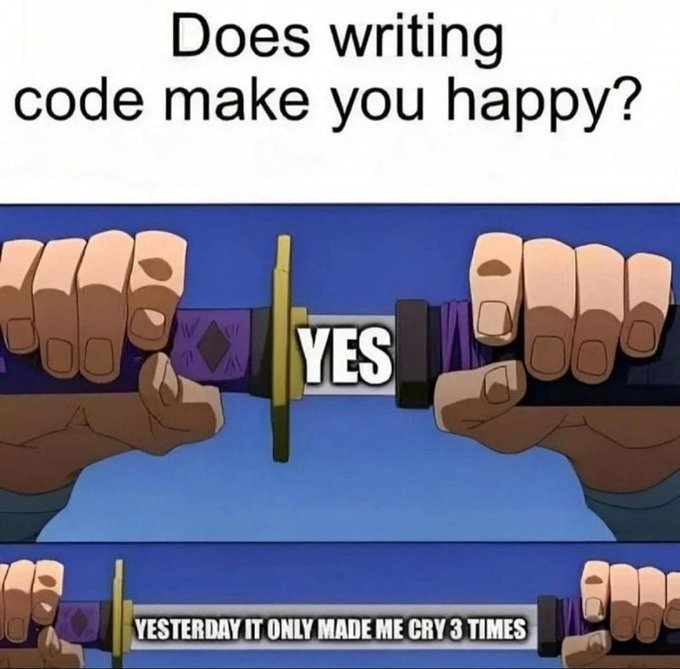

For you
Following
settings
Everyone can reply

Elon Musk
verified
@elonMusk · 6h
more_horiz
This week, @xAI will open source Grok
MEME_CODER
verified
@memecoder · 8h
more_horiz

Tailwind CSS
verified
@tailwindcss · 12h
more_horiz
✨ We just released Commit — a brand new changelog template we
designed, built with Tailwind CSS and Next.js! Lots of nice
little details in this one, check out the live demo here 👉